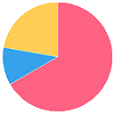
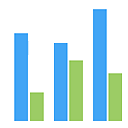
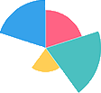

<ion-header class="centrado">
  <ion-toolbar>
    <ion-title>Panel de control</ion-title>
  </ion-toolbar>
</ion-header>

<ion-content>
  <!-- LEFT MENU -->
  <p-sidebar [(visible)]="leftMenu" [modal]=false>
    <h1 style="font-weight:normal">Altas</h1>
    <ion-button expand="full" (click)="leftMenu = false" (click)="mostrarForm('supervisor')">Alta de Supervisor
    </ion-button>
    <ion-button expand="full" (click)="leftMenu = false" (click)="mostrarForm('empleado')">Alta de Empleado</ion-button>
    <ion-button expand="full" (click)="leftMenu = false" (click)="mostrarForm('cliente')">Alta de Cliente
    </ion-button>
  </p-sidebar>
  <ion-icon id="hamburgerLeftMenu" class="hamburgerMenu" name="menu-outline" pButton type="button"
    (click)="leftMenu = true" (click)="rightMenu=false" (click)="mostrarGraficoEstadistico=false"></ion-icon>
  <!-- FIN LEFT MENU -->

  <!-- RIGHT MENU -->
  <p-sidebar [(visible)]="rightMenu" position="right" [baseZIndex]="10000" [modal]=false>
    <h1 style="font-weight:normal">Estadisticas</h1>
    <ion-button expand="full" (click)="leftMenu = false" (click)="mostrarGrafico('pie')"> Grafico de torta
    </ion-button>
    <ion-button expand="full" (click)="leftMenu = false" (click)="mostrarGrafico('bar')">Grafico de barras
    </ion-button>
    <ion-button expand="full" (click)="leftMenu = false" (click)="mostrarGrafico('polarArea')">Grafico de area
    </ion-button>
  </p-sidebar>
  <ion-icon id="hamburgerRightMenu" class="hamburgerMenu" name="menu-outline" (click)="rightMenu=true"
    (click)="leftMenu=false" (click)="mostrarFormRegistro=false" (click)="mostrarGraficoEstadistico=false"></ion-icon>
  <!-- FIN RIGHT MENU -->

  <app-graficos *ngIf="mostrarGraficoEstadistico" [tipoDeGrafico]="graficoSeleccionado"></app-graficos>
  <app-form-alta *ngIf="mostrarFormRegistro" [user]='user'></app-form-alta>
</ion-content>